专题01 立体图形的四种考法

考点01 几何体的点、棱、面
考点02从不同方向看几何体
考点03点、棱、面之间关系
考点04几何体的表面积与体积

考点01 几何体的点、棱、面
1．若一个棱柱有 条棱，则它的底面一定是（ ）
条棱，则它的底面一定是（ ）
A．四边形 B．六边形 C．八边形 D．十二边形
2．如果一个 棱柱总共有
棱柱总共有 条棱，那么这个棱柱有 个顶点．
条棱，那么这个棱柱有 个顶点．
3．由若干个单位立方体组成一个较大的立方体，然后把这个大立方体的某些面上涂上油漆，油漆干后，把大立方体拆开成单位立方体，发现有45个单位立方体上任何一面都没有漆．那么大立方体被涂过油漆的面数是（ ）
A．1 B．2 C．3 D．4
4．如图所示的几何体是由 个面组成的，其中平面有 个，曲面有 个；面与面相交形成 条线，其中直线有 条，曲线有 条．
5．工人叔叔在地面上用64个同样大小的小正方体拼成了一个大正方体，并把它的五个面涂上了颜色（贴地的那个面不涂色），其中3个面涂色的小正方体木块有 个，2个面涂色的有 个．
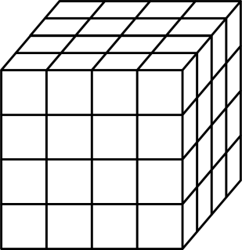
6．图是一个直七棱柱，它的底面边长都是2cm，侧棱长是5cm．观察这个棱柱，请回答下列问题：
(1)这个七棱柱共有多少个面？它们分别是什么形状？这个七棱柱的侧面积是多少？
(2)这个七棱柱共有多少条棱？它们的长度和是多少？
(3)这个七棱柱共有多少个顶点？
(4)通过对七棱柱的观察，你能说出n棱柱共有几个顶点？几条棱？几个面吗？
考点02 从不同方向看几何体
7．一个用小方块搭成的几何体，从正面、左面、上面看到的形状如下图，这个几何体一定是（ ）
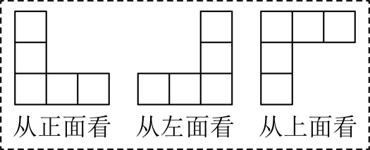
A．
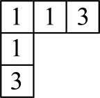
B．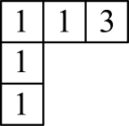
C．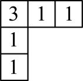
D．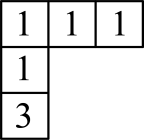
8．用小立方块搭一个几何体，从正面看与从上面看这个几何体得到的形状图如图所示，则它最多需要 个小立方块．
9．一个几何体由若干个大小相同的小立方块搭成，从上面看到的几何体的形状图如图所示，其中小正方形中的数字表示在该位置上的小立方块的个数，请画出从正面和从左面看到的这个几何体的形状图．
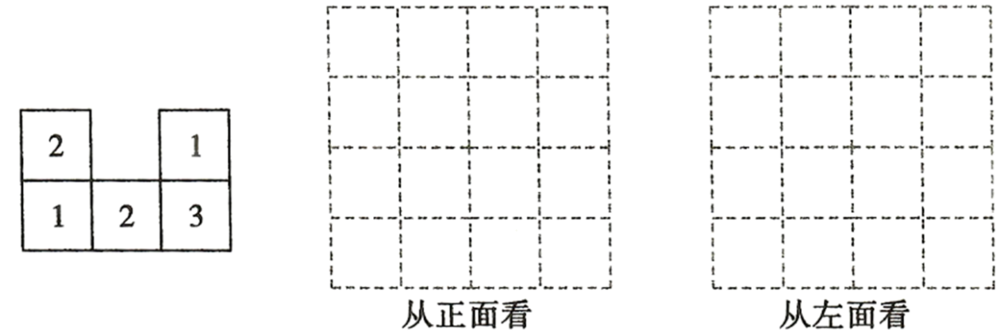
10．如图①所示，在平整的地面上，用多个棱长都为 的小正方体堆成一个几何体．
的小正方体堆成一个几何体．
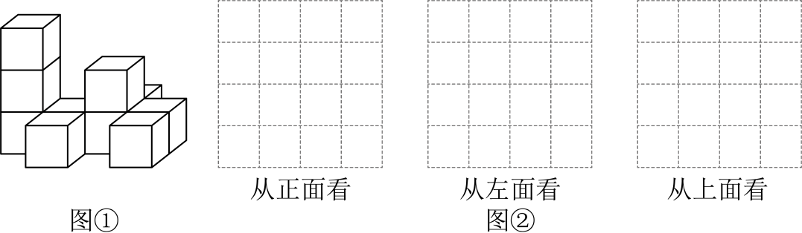
(1)一共有 个小正方体；
(2)在图②中画出这个几何体从正面、左面与上面看到的形状图，并求这个几何体的表面积；
(3)如果现在还有一些棱长都为的小正方体，要求保持从上面和左面看到的形状图都不变，最多可以再添加 个小正方体．
11．如图，是由一些棱长都为1的小正方体组合成的简单几何体．
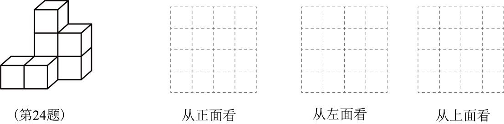
(1)该几何体的表面积（含下底面）为________；
(2)请画出这个几何体分别从正面、左面、上面看到的平面图形；
(3)如果在这个几何体上再添加一些相同的小正方体，并保持这个几何体从正面和从上面看到的图形不变，那么最多可以再添加_______个小正方体．
考点03 点、棱、面之间关系
12．阅读材料题：由平的面围成的立体图形又叫做多面体，有几个面，就叫做几面体．三棱锥有四个面，所以三棱锥又叫四面体；正方体又叫做六面体；有五条侧棱的棱柱又叫做七面体．
(1)探索：如果把一个多面体的顶点数记为V，棱数记为E，面数记为F，填表：
多面体 | V | F | E | 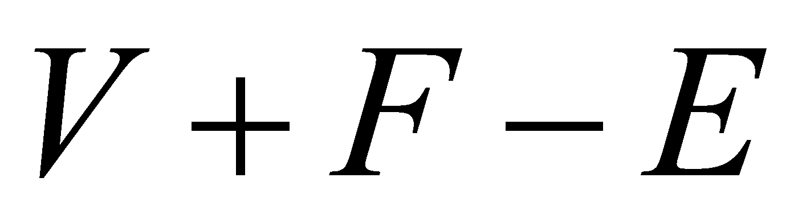 |
四面体 | 4 | 6 | ||
长方体 | 6 | 2 | ||
五棱柱 | 10 | 7 | 15 | 2 |
(2)猜想：由上面的探究你能得到一个什么结论？
(3)应用（2）的结果对所有的多面体都成立，伟大的数学家欧拉证明了这个关系式，这个关系式叫做欧拉公式．根据欧拉公式，想一想会不会有一个多面体，它有10个面，30条棱，20个顶点？
13．请你观察如图所示的几种简单多面体模型，解答下列问题：
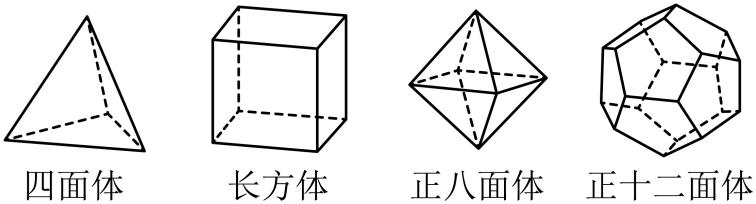
(1)根据上面多面体模型，完成表格：
多面体 | 顶点数（V） | 面数（F） | 棱数（E） |
四面体 | 4 | 4 | _______ |
长方体 | 8 | 6 | 12 |
正八面体 | _______ | 8 | 12 |
正十二面体 | 20 | 12 | 30 |
你发现顶点数（V）、面数（F）、棱数（E）之间存在的关系式是______________．
(2)一个多面体的面数与顶点数相等，有12条棱，这个多面体是_______面体．
14．如图，观察下列几何体并回答问题：
(1)n棱柱有__________个面、__________条棱、__________个顶点，n棱锥有__________个面、__________条棱、__________个顶点；
(2)所有像三棱柱、四棱柱、六棱柱、三棱锥等这样由四个或四个以上多边形所围成的立体图形叫作多面体．经过前人归纳总结发现，多面体的面数F、顶点个数V以及棱的条数E之间存在着一定的数量关系．
①继续观察如图所示多面体，并把表格填写完整：
面数（F） | 顶点数（V） | 棱数（E） | |
图① | |||
图② | |||
图③ |
②分析表格中的数据，你能发现F、V、E三者之间有何关系 ．
15．观察如图所示的几何体，回答下列问题：
(1)填写表格：
图形名称 | 底面边数 | 侧面数 | 侧棱数 | 顶点数 | |
图① | 三棱柱 | ||||
图② | 四棱柱 | ||||
图③ | 六棱柱 |
(2)根据（1）中的结果，猜想棱柱的侧面数、侧棱数、顶点数与棱柱的底面边数之间的关系．
(3)根据（2）中的猜想，直接写出二十棱柱的侧面数、侧棱数和顶点数．
考点04 几何体的表面积与体积
16．综合与实践
【问题情境】在一次数学实践活动课上，同学们利用一张边长为 的正方形纸板开展了“长方体纸盒的制作”实践活动
的正方形纸板开展了“长方体纸盒的制作”实践活动
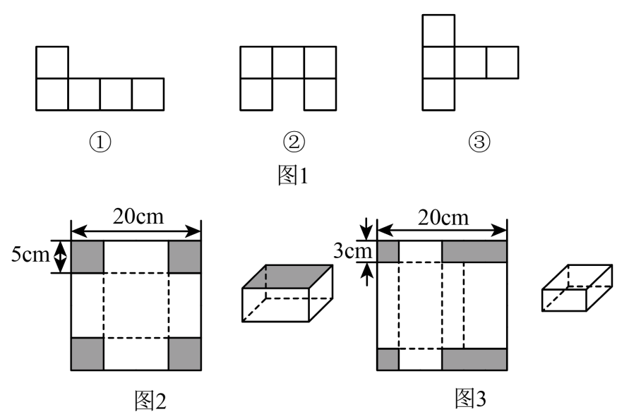
（1）图1中，是无盖正方体的表面展开图的是______．（填序号）
【操作探究】如图2，勤学小组的同学先在纸板四角剪去四个同样大小边长为 的小正方形，再沿虚线折合起来，制成了一个无盖的长方体纸盒．
的小正方形，再沿虚线折合起来，制成了一个无盖的长方体纸盒．
如图3，善思小组的同学先在纸板四角剪去两个同样大小边长为 的小正方形和两个同样大小的小长方形，再沿虚线折合起来，制成了一个有盖的长方体纸盒．
的小正方形和两个同样大小的小长方形，再沿虚线折合起来，制成了一个有盖的长方体纸盒．
【计算分析】
（2）①图2中的长方体纸盒的底面周长为______ ；
；
②图3中的长方体纸盒的体积为______ ；
；
【问题解决】
（3）请你利用边长为的正方形纸板制作一个长方体纸盒（无盖，有盖均可），仿照图2，图3的绘图方式，画出2种不同的裁剪设计图．
17．（一）实践准备
李老师带领七一班综合实践小组进行废物再利用的数学制作活动，他们准备用废弃的宣传单制作纸盒（有盖或无盖）．
（二）操作探究
（1）如图是“乐研组”制作的一个正方体纸盒的展开图，正方体的各面分别标有“南，阳，值，得，三，顾”六个字，则“阳”相对面的文字是_________
（2）“爱数组”准备制作一个无盖的正方体纸盒，则下列_________（填字母）图形经过折叠能围成无盖正方体纸盒．
A． B．
C． D．
（三）尝试应用
（3）如图2，这是一张长为 、宽为
、宽为
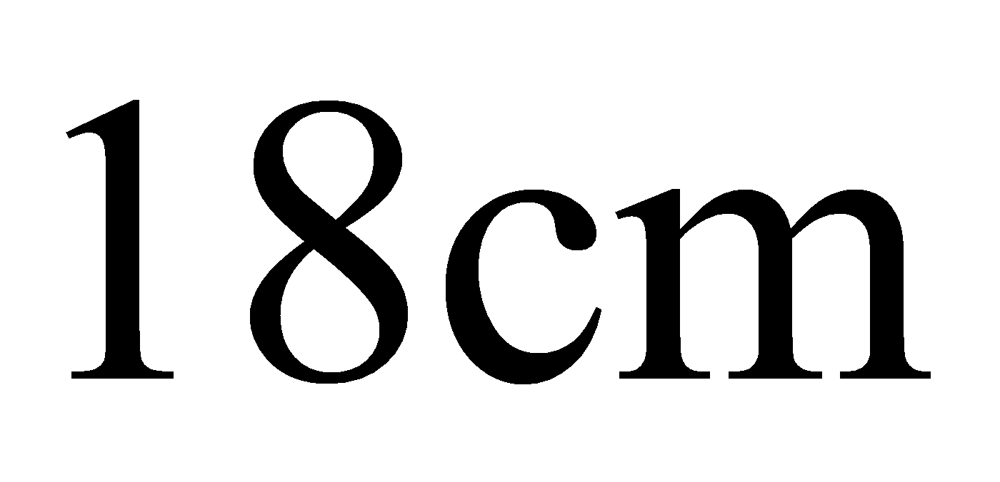
的长方形包装纸，现要制成牛奶盒子．上下各留宽度均为 的一个长方形，中间剩余部分用于制作牛奶盒身．如图3，将牛奶盒身分成四块长方形，其中①③长方形大小相同，②④长方形大小也相同，且②号长方形的宽比①号多
的一个长方形，中间剩余部分用于制作牛奶盒身．如图3，将牛奶盒身分成四块长方形，其中①③长方形大小相同，②④长方形大小也相同，且②号长方形的宽比①号多 ．把图3中的包装纸折成图4中的牛奶盒子，想要装下
．把图3中的包装纸折成图4中的牛奶盒子，想要装下 的牛奶是否能成功？为什么？
的牛奶是否能成功？为什么？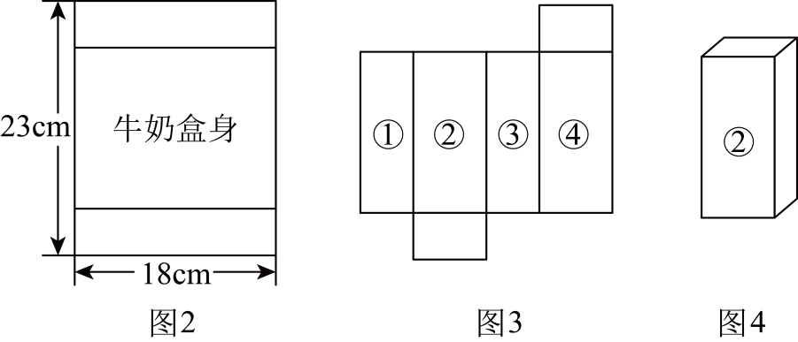
18．【问题情境】 《制作无盖的长方体纸盒》是苏科版数学课本七年级上册的课题学习内容，某综合实践小组参考这一课题中的内容，开展了“制作长方体纸盒”的实践活动．
【问题解决】
(1)在如图1所示的四个图形中，能够通过折叠围成有盖的长方体纸盒的是______（填序号）．

(2)该小组利用边长为 的正方形纸板设计了如下两种不同的制作长方体纸盒的方案．
的正方形纸板设计了如下两种不同的制作长方体纸盒的方案．
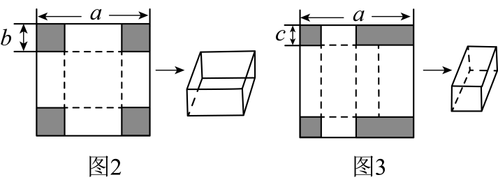
①按如图2所示的方案制作一个无盖的长方体纸盒，其操作步骤为：先在纸板的四个角上剪去 个边长为
个边长为 的小正方形，再沿虚线折叠纸板．若
的小正方形，再沿虚线折叠纸板．若 ，
， ，则该无盖长方体纸盒的底面周长为_______
，则该无盖长方体纸盒的底面周长为_______ ．
．
②按如图3所示的方案制作一个有盖的长方体纸盒，其操作步骤为：先在纸板的四个角上剪去 个边长为
个边长为
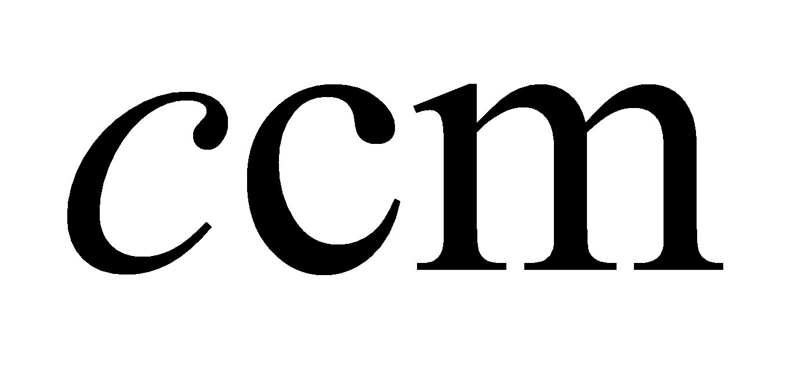
的小正方形和个同样大小的小长方形，再沿虚线折叠纸板．若 ，
， ，求该有盖长方体纸盒的体积．
，求该有盖长方体纸盒的体积．19．综合实践小组准备用废弃的宣传单制作装垃圾的无盖纸盒．

【操作探究】（ ）综合实践小组准备制作一个无盖的正方体纸盒，如图中只有四个正方形，请在原图上补画一个正方形，使其经过折叠能围成无盖的正方体纸盒；
）综合实践小组准备制作一个无盖的正方体纸盒，如图中只有四个正方形，请在原图上补画一个正方形，使其经过折叠能围成无盖的正方体纸盒；
【问题解决】（）图是综合实践小组的设计图，把它折成无盖的正方体纸盒后与有“卫”字一面的相对面上的字是______；（字在盒外）
【拓展探究】（ ）如图，有一张边长为的正方形废弃宣传单，小华准备将其四角各剪去一个相同的小正方形，折成一个无盖长方体纸盒.当四角剪去的小正方形的边长为
）如图，有一张边长为的正方形废弃宣传单，小华准备将其四角各剪去一个相同的小正方形，折成一个无盖长方体纸盒.当四角剪去的小正方形的边长为 时，请求出纸盒的容积．（纸张厚度忽略不计）
时，请求出纸盒的容积．（纸张厚度忽略不计）
20．综合实践
“长方体纸盒的制作”实践活动 | ||
素材 一 | 作为吸引顾客的第一道惊喜，厂家对包装盒的设计与制作可谓煞费苦心．包装盒上同样蕴涵着丰富的数学知识，而设计师与企业家们都是数学能手，对包装盒的设计在更优、更省、更美的目标上精益求精． | |
素材二 | 某纸箱厂用边长为 ②图2方式设计制作一个有盖的长方体纸盒的方法：先在纸板四个角剪去两个同样大小边长为 | 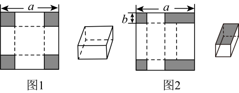 |
素材三 | 包装盒的拆解，我们可以将同一形状的包装盒进行不同方式的拆解，从而得到不同的表面展开图．下面是对一个无盖长方体盒子（它缺一个长为8cm，宽为5cm的长方形盖子）的长、宽、高分别为 | 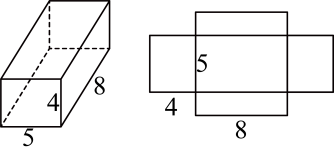 |
任务一 | 下列图形中，不是无盖正方体盒子的表面展开图的是______（填序号）． 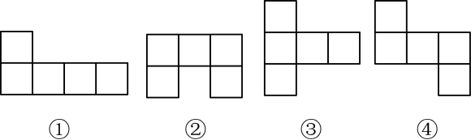 | |
任务二 | 由材料二可知，图1长方体纸盒的底面周长为_____cm（用含 图2的设计中，如果 | |
任务二 | 在材料三，这个无盖长方体的其它不同平面展开图中，请你画出该无盖长方体外围周长最大的一种表面展开图，并求出最大外围周长的值． | |
 的正方形纸板设计出两种不同的方案制作长方体盒子用于包装瓷器（图1为无盖的长方体纸盒，图2为有盖的长方体纸盒）①图1方式设计制作一个无盖的长方体盒子的方法：先在纸板四个角剪去四个同样大小边长为
的正方形纸板设计出两种不同的方案制作长方体盒子用于包装瓷器（图1为无盖的长方体纸盒，图2为有盖的长方体纸盒）①图1方式设计制作一个无盖的长方体盒子的方法：先在纸板四个角剪去四个同样大小边长为 的小正方形，再沿虚线折合起来．
的小正方形，再沿虚线折合起来． 、
、 、
、 进行拆解，如图是该长方体盒子的一种平面展开图，它的外围周长为
进行拆解，如图是该长方体盒子的一种平面展开图，它的外围周长为 ．事实上，该长方体盒子的平面展开图还有不少种不同的方法．
．事实上，该长方体盒子的平面展开图还有不少种不同的方法． ，
， 的代数式表示）．
的代数式表示）． ，计算该长方体纸盒的体积．
，计算该长方体纸盒的体积．